蚊女，日本动漫《一拳超人》中的女性角色。由蚊子和女性融合结构的怪物（据基诺斯博士说只能算是试验品）。 操纵大群的蚊子袭击主角所在的Z市，通过吸血能不断强化自身的能力。一度将杰诺斯逼至绝境。结果被主角埼玉一记耳光扇飞。
杰诺斯15岁时家园被一名暴走改造人毁灭，为报仇雪恨在库斯诺博士的帮助下成为了改造人。在19岁的某一天和蚊女的战斗中被埼玉救下， 目睹了埼玉的强大后主动缠着埼玉并希望成为埼玉的弟子。成功成为埼玉的弟子后则希望能够掌握老师的强大之处，从而使自己真的变强。
战栗的龙卷 [1] ，日本漫画《一拳超人》及改编作品中的角色。英雄排名S级第2位，超能力者。绿色卷发，身穿黑色开衩长衫， 萝莉脸。地狱吹雪（B级第一位）的姐姐。
king，日本漫画《一拳超人》及改编作品中的角色。其成为英雄的背景是，5次在怪人被打倒的现场被发现， 英雄协会误以为都是他的功劳而将其评为S级英雄
性感囚犯是日本漫画《一拳超人》及其衍生作品中登场的虚拟人物，是一名同性恋，与超合金黑光等众多S级英雄相处融洽，由小野坂昌也配音。
警犬侠，日本漫画《一拳超人》及衍生作品中的角色。只负责守护Q城市安全的S级英雄，总是身穿一套狗狗形的套偶。即使是在淋浴时也不离身。 他吃饭的习惯也和狗一样，不使用叉子汤匙吃饭。在重制版中把饿狼狩猎，展现了强大的实力。
勇敢挑战世上所有坏蛋的驱动骑士！总是如风般现身，如风般离去，他的存在本身就是最高机密，在听到撼动空气的驱动声的瞬间， 你或许就会目击怪人的消逝。
饿狼，日本漫画《一拳超人》及衍生作品中的角色。自称“人类怪人”与“英雄狩猎。有着极高的武术天赋。原邦古首席大弟子，后被逐出师门。 后来逐渐认识到英雄协会为首的伪善正是不平等的正义的根源，遂立志成为“人类怪人”推翻现有秩序，营造“恶平等”的世界。